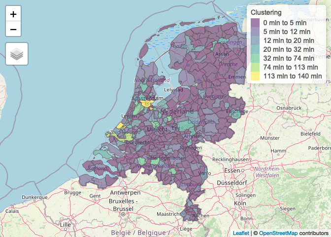

spatialrisk is a R-package for spatial risk calculations. It offers an efficient approach to determine the sum of all observations within a circle of a certain radius. This might be beneficial for insurers who are required (by a recent European Commission regulation) to determine the maximum value of insured fire risk policies of all buildings that are partly or fully located within a circle of a radius of 200m. The key functions in spatialrisk are written in C++ (using Rcpp), and are therefore very fast.
Installation
Install spatialrisk from CRAN:
install.packages("spatialrisk")
Or the development version from GitHub:
# install.packages("remotes") remotes::install_github("MHaringa/spatialrisk")
Example 1
Find all observations in data.frame Groningen that are located within circle of a radius of 100m from the point (lon,lat) = (6.561561,53.21326):
library(spatialrisk) circle <- points_in_circle(Groningen, lon_center = 6.571561, lat_center = 53.21326, radius = 100) circle
## # A tibble: 14 x 10
## street number letter suffix postal_code city lon lat amount distance_m
## <chr> <int> <chr> <chr> <chr> <chr> <dbl> <dbl> <dbl> <dbl>
## 1 Heresi… 5 <NA> <NA> 9711EP Groni… 6.57 53.2 5 31.4
## 2 Heresi… 11 <NA> <NA> 9711ER Groni… 6.57 53.2 11 47.8
## 3 Zuider… 1003 <NA> <NA> 9724AK Groni… 6.57 53.2 1003 57.6
## 4 Heresi… 13 <NA> <NA> 9711ER Groni… 6.57 53.2 13 68.1
## 5 Herepl… 10 <NA> <NA> 9711GA Groni… 6.57 53.2 10 74.6
## 6 Heresi… 16 <NA> <NA> 9711ES Groni… 6.57 53.2 16 84.1
## 7 Heresi… 6 <NA> <NA> 9711ES Groni… 6.57 53.2 6 86.2
## 8 Heresi… 6 a <NA> 9711ES Groni… 6.57 53.2 6 87.8
## 9 Heresi… 6 b <NA> 9711ES Groni… 6.57 53.2 6 90.9
## 10 Heresi… 20 <NA> <NA> 9711ET Groni… 6.57 53.2 20 91.5
## 11 Heresi… 20 a <NA> 9711ET Groni… 6.57 53.2 20 93.0
## 12 Heresi… 15 a <NA> 9711ER Groni… 6.57 53.2 15 95.1
## 13 Zuider… 1007 <NA> <NA> 9724AK Groni… 6.57 53.2 1007 97.2
## 14 Zuider… 25 a <NA> 9724AJ Groni… 6.57 53.2 25 97.8The sum of all observations within a circle of a radius of 100m is equal to:
sum(circle$amount)
The next example shows how to determine the sum of all observations within a circle with a certain radius for multiple points.
Example 2
concentration() determines the sum of all observations within a circle of a certain radius for multiple points. Find for each row in df the sum of all observations in Groningen within a circle of a radius of 100m from the (lon,lat) pair:
df <- data.frame(location = c("p1", "p2", "p3"), lon = c(6.561561, 6.561398, 6.571561), lat = c(53.21369, 53.21326, 53.21326)) conc <- concentration(df, Groningen, value = amount, radius = 100) conc
## location lon lat concentration
## 1 p1 6.561561 53.21369 775
## 2 p2 6.561398 53.21326 2271
## 3 p3 6.571561 53.21326 2163Show that result is indeed equal to the result from Example 1:
Example 3
spatialrisk also contains functionality to create choropleths. Typically in R it is difficult to create choropleths. points_to_polygon() attempts to elegantly solve this problem.
The common approach is to first aggregate the data on the level of the regions in the shapefile, and then merging the aggregated data with the shapefile. Despite it being common, it is problematic in case the names in the data and the names in the shapefile do not match. This is for example the case when there are differences in punctuation marks in the area names. Therefore, points_to_polygon() uses the longitude and latitude of a point to map this point to a region. This approach makes it easy to create choropleth maps on different region levels.
This example shows how points_to_polygon() is used to map the total sum insured on the municipality level in the Netherlands:
gemeente_sf <- points_to_polygon(nl_gemeente, insurance, sum(amount, na.rm = TRUE))
choropleth() creates a map based on the simple feature object obtained in the previous step. There are two options to create a choropleth map. When mode is set to plot a static map is created. The given clustering is according to the Fisher-Jenks algorithm. This commonly used classification method for choropleths seeks to reduce the variance within classes and maximize the variance between classes.
choropleth(gemeente_sf, mode = "plot", legend_title = "Sum insured (EUR)", n = 5)

If mode is set to view an interactive map is created:
choropleth(gemeente_sf, mode = "view", legend_title = "Sum insured (EUR)")

The following simple feature objects are available in spatialrisk: nl_provincie, nl_corop, nl_gemeente, nl_postcode1, nl_postcode2, nl_postcode3, nl_postcode4, world_countries, and europe_countries.